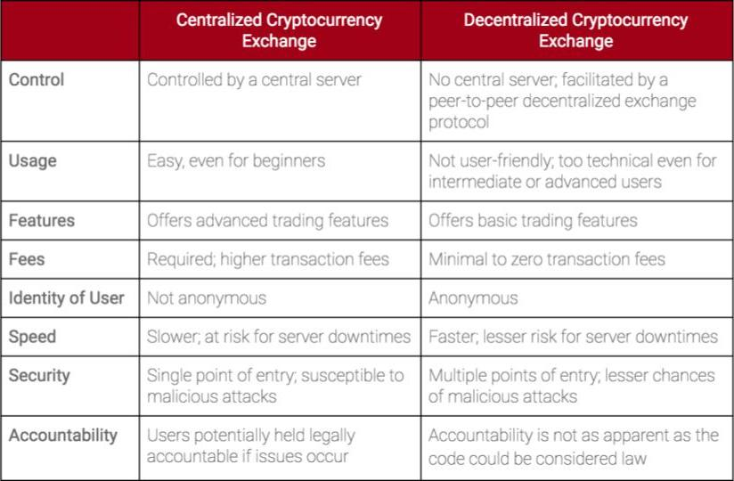

Objectives
- Explain difference between centralized and decentralised exchnges
- Create a crowdsale(ICO) token contract using ERC20 token
- Implement time lock mechanism in a crowdsale contract
- Apply principles of tokeneconomics to the token contract
Air Drops
Airdrops is a process by which the company distributes its tokens to wallets of certain user, completely free of charge.
Centralized v/s Decentralized Exchange
Decentralized Exchange
- In most exchanges, only the asset exchange is decentralized, as the assets are cryptocurrencies deployed on the blockchain that no central entity controls.
- Due to KYC and AML regulations, exchanges are often required to seek users’ identities for capital deposits, creating centralized record-collection and data-storage of personal information. Centralized exchanges give users permission to transact currencies, rather than creating a permissionless ecosystem.
Centralized and Decentralised Exchange

Mechanism Design
- a field in economics and game theory that takes an engineering approach
to designing economic mechanisms or incentives, toward desired
objectives, in strategic settings, where players act rationally
-
Put simply, we create a set of desired outcomes, and generate an incentive structure that will cause rational actors to perpetuate those desired outcomes
-
This differs from game theory, where we are looking to maximize utility in a finite set of rules (game)
-
The grand vision of crypto economics is to extrapolate this success to embed crypto economic incentives into everything — transactions, computation, storage, prediction, power.